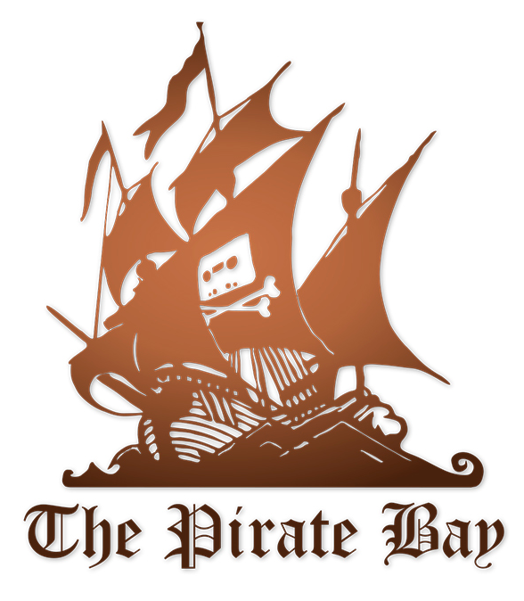

The Pirate Bay
The Pirate Bay (sometimes abbreviated as TPB) is an online index of digital content of entertainment media and software. Founded in 2003 by Swedish think tank Piratbyrån, The Pirate Bay allows visitors to search, download, and contribute magnet links and torrent files, which facilitate peer-to-peer (P2P) file sharing among users of the BitTorrent protocol.
The Pirate Bay has sparked controversies and discussion about legal aspects of file sharing, copyright, and civil liberties and has become a platform for political initiatives against established intellectual property laws as well as a central figure in an anti-copyright movement. The website faced several shutdowns and domain seizures, switching to a series of new web addresses to continue operating.
In April 2009, the website's founders (Peter Sunde, Fredrik Neij, and Gottfrid Svartholm) were found guilty in the Pirate Bay trial in Sweden for assisting in copyright infringement and were sentenced to serve one year in prison and pay a fine. In some countries, Internet service providers (ISPs) have been ordered to block access to the website. Subsequently, proxy websites have been providing access to it. Founders Svartholm, Neij, and Sunde were all released by 2015 after having served shortened sentences.
Content
The Pirate Bay
- Rating: 10/10
- Year Founded: 2003
- Monthly Visitors: 24 million
- Download Speed: 6 MB/s
History
The Pirate Bay was established in September 2003 by the Swedish anti-copyright organisation Piratbyrån (The Piracy Bureau); it has been run as a separate organisation since October 2004. The Pirate Bay was first run by Gottfrid Svartholm and Fredrik Neij, who are known by their nicknames "anakata" and "TiAMO", respectively. They have both been accused of "assisting in making copyrighted content available" by the Motion Picture Association of America. On 31 May 2006, the website's servers in Stockholm were raided and taken away by Swedish police, leading to three days of downtime. The Pirate Bay claims to be a non-profit entity based in the Seychelles; however, this is disputed.
The Pirate Bay has been involved in a number of lawsuits, both as plaintiff and as defendant. On 17 April 2009, Peter Sunde, Fredrik Neij, Gottfrid Svartholm, and Carl Lundström were found guilty of assistance to copyright infringement and sentenced to one year in prison and payment of a fine of 30 million SEK (approximately 4.2m USD, 2.8m GBP, or 3.1m EUR), after a trial of nine days. The defendants appealed the verdict and accused the judge of giving in to political pressure. On 26 November 2010, a Swedish appeals court upheld the verdict, decreasing the original prison terms but increasing the fine to 46 million SEK. On 17 May 2010, because of an injunction against their bandwidth provider, the site was taken offline. Access to the website was later restored with a message making fun of the injunction on their front page. On 23 June 2010, the group Piratbyrån disbanded due to the death of Ibi Kopimi Botani, a prominent member and co-founder of the group.
The Pirate Bay was hosted for several years by PRQ, a Sweden-based company, owned by creators of TPB Gottfrid Svartholm and Fredrik Neij. PRQ is said to provide "highly secure, no-questions-asked hosting services to its customers". From May 2011, Serious Tubes Networks started providing network connectivity to The Pirate Bay. On 23 January 2012, The Pirate Bay added the new category Physibles. These are 3D files described as "data objects that are able (and feasible) to become physical" using a 3D printer. In May 2012, as part of Google's newly inaugurated "Transparency Report", the company reported over 6,000 formal requests to remove Pirate Bay links from the Google Search index; those requests covered over 80,500 URLs, with the five copyright holders having the most requests consisting of: Froytal Services LLC, Bang Bros, Takedown Piracy LLC, Amateur Teen Kingdom, and International Federation of the Phonographic Industry (IFPI). On 10 August 2013, The Pirate Bay announced the release of PirateBrowser, a free web browser used to circumvent internet censorship. The site was the most visited torrent directory on the World Wide Web from 2003 until November 2014, when KickassTorrents had more visitors according to Alexa. On 8 December 2014, Google removed most of the Google Play apps from its app store that have "The Pirate Bay" in the title.
On 9 December 2014, The Pirate Bay was raided by the Swedish police, who seized servers, computers, and other equipment. Several other torrent related sites including EZTV, Zoink, Torrage and the Istole tracker were also shut down in addition to The Pirate Bay's forum Suprbay.org. On the second day after the raid EZTV was reported to be showing "signs of life" with uploads to ExtraTorrent and KickassTorrents and supporting proxy sites like eztv-proxy.net via the main website's backend IP addresses. Several copies of The Pirate Bay went online during the next several days, most notably oldpiratebay.org, created by isoHunt.
On 19 May 2015, the .se domain of The Pirate Bay was ordered to be seized following a ruling by a Swedish court. The site reacted by adding six new domains in its place. The judgment was appealed on 26 May 2015. On 12 May 2016, the appeal was dismissed and the Court ruled the domains be turned over to the Swedish state. The site returned to using its original .org domain in May 2016. In August 2016, the US government shut down KickassTorrents, which resulted in The Pirate Bay becoming once again the most visited BitTorrent website.
Website
The Pirate Bay allows users to search for Magnet links. These are used to reference resources available for download via peer-to-peer networks which, when opened in a BitTorrent client, begin downloading the desired content. (Originally, The Pirate Bay allowed users to download BitTorrent files (torrents), small files that contain metadata necessary to download the data files from other users). The torrents are organised into categories: "Audio", "Video", "Applications", "Games", and "Other". Registration requires an email address and is free; registered users may upload their own torrents and comment on torrents. According to a study of newly uploaded files during 2013 by TorrentFreak, 44% of uploads were television shows and movies, porn was in second place with 35% of uploads, and audio made up 9% of uploads. Registration for new users was closed in May 2019 following problems with the uploading of malware torrents.
The website features a browse function that enables users to see what is available in broad categories like Audio, Video, and Games, as well as sub-categories like Audio books, High-res Movies, and Comics. Since January 2012, it also features a "Physibles" category for 3D-printable objects. The contents of these categories can be sorted by file name, the number of seeders or leechers, the date posted, etc.
Piratbyrån described The Pirate Bay as a long-running project of performance art. Normally, the front page of The Pirate Bay featured a drawing of a pirate ship with the logo of the 1980s anti-copyright infringement campaign, "Home Taping Is Killing Music", on its sails instead of the Jolly Roger symbol usually associated with pirate ships.